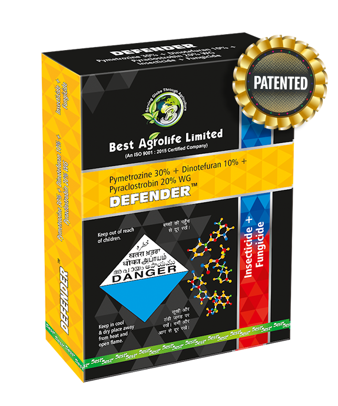

Technical Name: Pymetrozine 30% + Dinotefuran 10% + Pyraclostrobin 20% WG
Mode of Action: It is a mixture of insecticide & fungicide, used for the effective control of Brown plant hopper (Nilaparvata lugens), White backed plant hopper (Sogatella furcifera) & Blast disease in Paddy Crop.
Major Crops: Paddy
Target Weeds: Brown plant hopper (Nilaparvata lugens), White backed plant hopper (Sogatella furcifera) & Blast disease
Dose/Acre: 112.5 + 37.5 + 75 g/ha
Presentation Available: 1KG, 500GM, 200GM, 100GM
Company: Best Agros